Introducere
Outlook 2010 include funcții puternice de programare în vizualizarea Calendar. De acolo, puteți crea întâlniri și vă puteți gestiona timpul.
În această lecție, veți învăța cum să programați întâlniri și să creați mai multe calendare. Vom vorbi, de asemenea, despre cum să vă organizați programul, inclusiv despre cum să aplicați categorii și mementouri.
Vizualizare calendarVizualizarea calendar facilitează programarea întâlnirilor și ținerea evidenței datelor importante, la fel ca un calendar de birou. Dar, spre deosebire de un calendar fizic, vizualizarea Calendar vă permite să editați și să rearanjați rapid programul oricând doriți. Deși este folosită cel mai frecvent la locul de muncă, vizualizarea Calendar poate fi utilă și pentru gestionarea unui program personal încărcat pe computerul de acasă.
Interfața de vizualizare Calendar- Pentru a accesa vizualizarea Calendar, localizați și selectați fila Vizualizare calendar din colțul din stânga jos al ecranului. Va apărea vizualizarea calendarului.
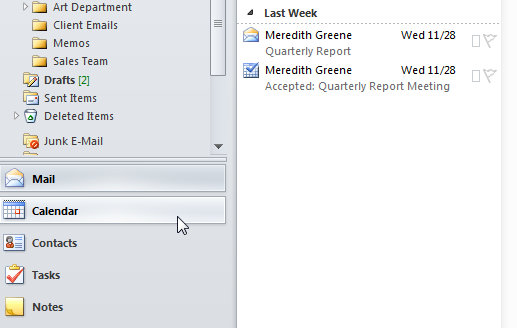
Ori de câte ori programați o nouă întâlnire, este ușor să o adăugați în calendar.
- Găsiți și selectați comanda New Appointment din Panglică.
- Va apărea caseta de dialog Nouă întâlnire. Introduceți informațiile dorite pentru programare. Cel puțin, ar trebui să includeți un subiect, ora și locația, dar puteți include și multe alte informații, cum ar fi preferințele de memento și note detaliate.
- Când ați terminat de introdus informațiile despre întâlnire, faceți clic pe Salvare și închidere.
- Întâlnirea va fi salvată și adăugată în calendarul dvs.
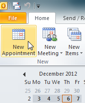
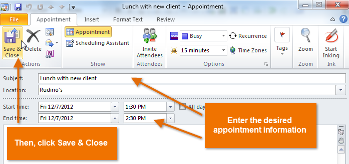
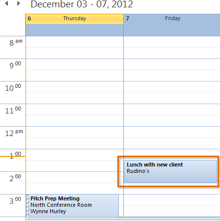
Dacă păstrați o mulțime de întâlniri diferite , puteți utiliza mai multe calendare pentru a vă organiza programele. De exemplu, puteți folosi un calendar pentru a vă ține evidența sarcinilor personale și altul pentru a gestiona întâlnirile viitoare cu clienții.
Pentru a crea un calendar nou:- Faceți clic pe fila Folder din Panglică, apoi faceți clic pe comanda Calendar nou.
- Va apărea caseta de dialog Creare folder nou. Introduceți un nume pentru noul calendar, asigurați-vă că este selectat Calendar, apoi faceți clic pe OK.
- Noul calendar va apărea în panoul Vizualizare. Faceți clic pe caseta de selectare din panoul de navigare pentru a activa și dezactiva calendarul.
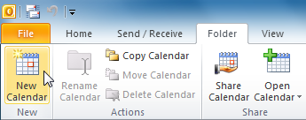
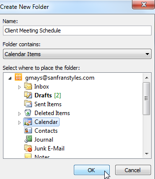
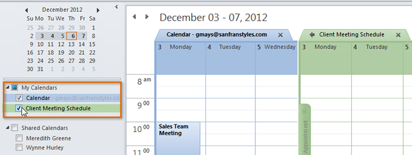
Odată ce vă familiarizați cu elementele de bază ale vizualizării Calendar, puteți începe să profitați de cele mai utile funcții ale acesteia cu aceste sfaturi suplimentare.
Pentru a aplica categorii la întâlniri:Dacă programați o mulțime de întâlniri diferite, le puteți menține organizate aplicând categorii, la fel ca mesajele de e-mail.
- Pentru a aplica o categorie, selectați rezervarea dorită, apoi faceți clic pe comanda Categorizare din Panglică.
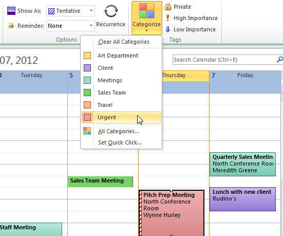
Dacă aveți o întâlnire care se va întinde pe mai multe zile, cum ar fi o vacanță sau o conferință, puteți programa programarea pentru a se extinde pe mai multe zile din calendar.
- Când creați întâlnirea, setați ora de început și de sfârșit pentru întreaga durată a întâlnirii.
- Întâlnirea va apărea în calendarul dvs. în mai multe zile.
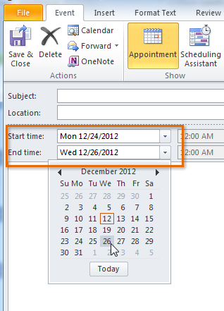
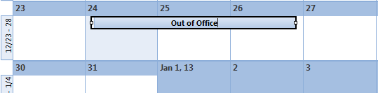
Puteți crea mementouri pentru cele mai importante întâlniri ale dvs., care vă pot fi deosebit de utile dacă țineți un program încărcat. De exemplu, puteți programa un memento pentru o dată importantă de prânz, care ar apărea cu 30 de minute înainte de întâlnire.
- Pentru a crea un memento, pur și simplu setați o oră de memento pe Panglică atunci când creați o nouă întâlnire.
- Mementoul va apărea într-o casetă de dialog pop-up la ora programată.
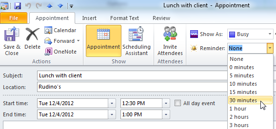
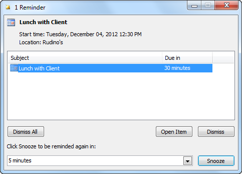
Dacă trebuie să vă referiți la programul dvs. din mers, este ușor să vă imprimați calendarele.
- Faceți clic pe fila Fișier din Panglică.
- Va apărea vizualizarea în culise. Găsiți și selectați Imprimare.
- Va apărea panoul Imprimare. Alegeți aspectul dorit, inclusiv rezumatele zilnice, săptămânale și lunare ale întâlnirilor și întâlnirilor dvs., apoi faceți clic pe Imprimare.
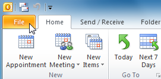
.png)
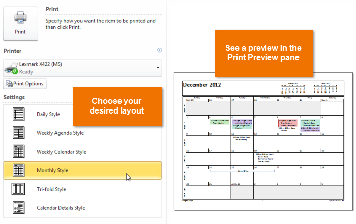